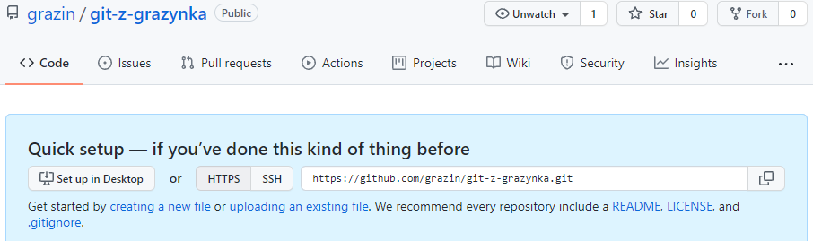

Ściągnij kolejne ćwiczenia z grażynkowego repozytorium na GitHubie.

Przejdź na GitHuba https://github.com/grazin/git-z-grazynka i skopiuj adres HTTPS.

Powyżej repozytorium z poprzednich ćwiczeń otwórz konsolę git bash. Jeśli nie masz menu kontekstowego, otwórz konsolę i przejdź do wybranej lokalizacji za pomocą wiersza poleceń konsoli cd.
$ git clone https://github.com/grazin/git-z-grazynkaodpowiedź:
Cloning into 'git-z-grazynka'...Sklonuj repozytorium.